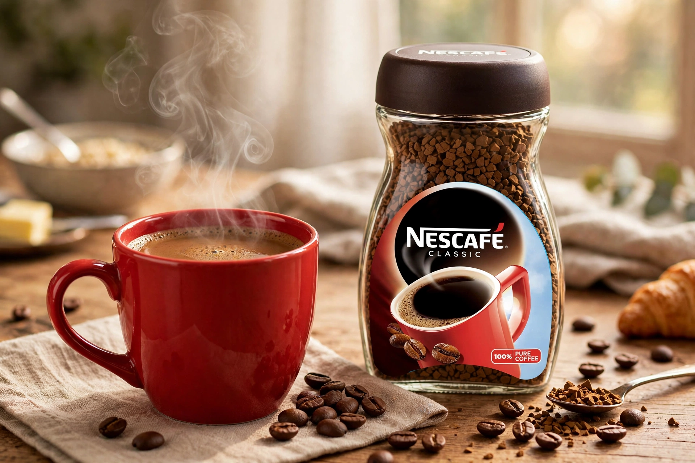

Nescafé is a brand of instant coffee made by Nestlé. The name is a portmanteau of "Nestlé" and "café". It was introduced in Switzerland on 1 April 1938, after Nestlé was asked by the Brazilian government to help preserve surplus coffee beans.
Food scientist Max Morgenthaler and his team developed a soluble coffee that retained flavour when hot water was added, using a spray-drying / freeze-drying process with added carbohydrates. Nescafé spread worldwide during the Second World War, when it was included in American service members' rations, and became a dominant global coffee brand in the postwar decades.
Variants include Nescafé Original, Gold Blend, Azera, Dolce Gusto pods and ready-to-drink coffees, sold in over 180 countries in many local formulations. Premium and specialty lines have expanded in response to competition from coffee shops and capsule systems.
Famous campaigns include the Gold Blend couple television adverts in Britain and Nescafé's red mug as a brand icon.